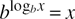

Networking Security Networking Security Networking Security Security Networking Security Networking Security Networking Charlie Kaufman Radia Perlman Mike Speciner Prentice Hall Network Security: Private Communication in a Public World, Second Edition Glossary
- access control
a mechanism for limiting use of some resource to authorized users.
- access control set
a synonym for access control list; some people make the distinction that the order of entries in an access control set cannot be significant, while the order of entries in an access control list might be.
- ACL (access control list)
a data structure associated with a resource that specifies the authorized users.
- active attack
one in which an attacker does something other than simply eavesdropping, for instance, transmits data, modifies data, or subverts the system so that it can impersonate an address.
- ANSI
one of several organizations that develop and publish standards for computer networking. It stands for American National Standards Institute.
- API (Application Programming Interface)
a description of how one body of software uses another.
- ASCII
a mapping between text characters and numbers. It stands for American Standard Code for Information Interchange.
- ASN.1 (Abstract Syntax Notation 1)
an ISO standard for data representation and data structure definitions. We can hardly wait to see ASN.2.
- asymmetric cryptography
public key cryptography.
- Athena
a project conducted at the Massachusetts Institute of Technology that developed a number of interesting technologies including the Kerberos cryptographic authentication system.
- ATM
automatic teller machine. (Though in a book on computer networking, you'd probably expect this to have something to do with Asynchronous Transfer Mode, a high performance networking technology.)
- audit
keep a record of events that might have some security significance, such as when access to resources occurred.
- authenticate
to determine that something is genuine. In the context of this book, to reliably determine the identity of a communicating party.
- authentication
the process of reliably determining the identity of a communicating party.
- authorization
permission to access a resource.
- background authentication
authentication that takes place automatically when a user requests a service without the user having to do anything.
- bad guy
someone who is trying to defeat a cryptographic or other security mechanism. (No moral implications here; some of our best friends are bad guys.)
- batch job
a process run on behalf of a particular user while the user need not be physically present at any terminal and no terminal is associated with the process. The user will presumably return later and harvest the results.
- big-endian
most significant to least significant, usually applied to the ordering of bits and/or bytes.
- biometric device
a device that authenticates people by measuring some hard-to-forge physical property, like a fingerprint or the strokes and timing of a signature.
- bit
a binary digit: 0 or 1; an element of Z2; the smallest unit of memory in a binary computer; the amount of information conveyed by the result of an experiment with two equally likely outcomes.
- block encryption
scrambling, in a reversible manner, a fixed-size piece of data into a fixed-size piece of ciphertext.
- bucket brigade attack
getting in between two legitimate users, relaying their messages to each other, and thereby spoofing each of them into thinking they are talking directly to the other.
- byte
some number (usually 8) of contiguous bits (see octet).
- byte-swap
conversion between big-endian and little-endian by reversing the order of bytes.
- CA
certification authority. Something that signs certificates.
- call back
a security mechanism for dial-in connections to a network whereby a user calls in, requests a connection, and hangs up. The computer system then calls him back and thus reliably knows the telephone number of the caller.
- caller ID
a relatively new service offered by the telephone system whereby the recipient of a call is reliably informed of the number of the phone originating the call.
- captive account
an account on a timesharing system that allows someone who uses that account to run only a single program which carefully controls access to system resources.
- CBC (cipher block chaining)
a method of using a block encryption scheme for encrypting an arbitrary-sized message.
- CBC residue
the last block of ciphertext when encrypting a message using cipher block chaining. Since it is difficult to find two messages with the same CBC residue without knowing the key, CBC residue is often used as an integrity-protecting checksum for a message.
- CCITT
a standards organization dominated by European telephone companies known as PTTs, where PTT stands for Postal, Telephone, and Telegraph Authority, and CCITT stands for something or other in French. (If you insist, it's Comité Consultatif International de Télégraphique et Téléphonique.) CCITT publishes standards for computer networking, including the X.400 series of documents concerning electronic mail and the X.500 series of documents concerning directory services. Its name is now ITU.
- CDC (certificate distribution center)
the name the DASS system gives to their on-line system that distributes certificates and user private keys.
- certificate
a message signed with a public key digital signature stating that a specified public key belongs to someone or something with a specified name.
- certificate revocation list (CRL)
a digitally signed data structure listing all the certificates created by a given CA that have not yet expired but are no longer valid.
- certification authority (CA)
something trusted to sign certificates.
- CFB (cipher feedback)
a method of using a block encryption scheme for encrypting an arbitrary-sized message.
- challenge
a number given to something so that it can cryptographically process the number using a secret quantity it knows and return the result (called the response). The purpose of the exercise is to prove knowledge of the secret quantity without revealing it to an eavesdropper. This is known as challenge/response authentication.
- Chaos Computer Club
a loosely knit organization centered in Germany that made the news by staging some high-profile break-ins to computer networks.
- checksum
a small, fixed-length quantity computed as a function of an arbitrary length message. A checksum is computed by the sender of a message and recomputed and checked by the recipient of a message to detect data corruption. Originally, the term checksum meant the specific integrity check consisting of adding all the numbers together and throwing away carries. Usage has extended the definition to include more complex non-cryptographic functions such as CRCs, which detect hardware faults with high probability, and cryptographic functions such as message digests, which can withstand attacks from clever attackers.
- Chinese wall
a policy that says that someone is authorized to access resource A or B, but not both. It is common in a brokerage or investment banking firm representing two different clients, to avoid conflict of interest.
- CIA (Central Intelligence Agency)
the arm of the United States government responsible for spying, and hence a convenient target for our lame jokes.
- classified
an adjective describing something the government does not want divulged for national security reasons. There are various categories of classified, including CONFIDENTIAL, SECRET, and TOP SECRET.
- cleartext
a message that is not encrypted.
- client
something that accesses a service by communicating with it over a computer network.
- Clipper
the name by which the U.S. government's scheme for encrypting telephones is known. The scheme allows high-grade encryption while allowing wiretapping with a court order. (The name will change due to trademark violation, but that's the name it's known by now.)
- CLNP (Connectionless Network Protocol)
an OSI standard network layer protocol for sending data through a computer network.
- clogging protection
protection against denial-of-service attacks consisting of overwhelming a node with requests.
- COCOM
a treaty among many leading Western nations that coordinated export control regulations on technologies of military significance, including cryptography. The treaty is no longer in force, but similar export regulations in many countries remain as its legacy.
- compromise
in common English usage, to give up some things in order to reach agreement on something; this usage rarely arises in the security community. In the context of security, to invade something by getting around its security. A person who has been compromised might be someone who has accepted a bribe. A computer that has been compromised might be one that has had a Trojan horse installed.
- confidentiality
the property of not being divulged to unauthorized parties.
- confinement
not allowing information of a certain security classification to escape from the environment in which it is allowed to reside.
- cookie
three meanings:
data given to a web browser that the web browser returns on subsequent calls in order to create the illusion of an ongoing session. a term first used in Photuris; an anticlogging token. a delicious concoction, preferably containing chocolate chips and no nuts.
- cracker
a person who uses other people's computers for criminal purposes. It's not a very good word, but we hope people will use it instead of "hacker" so as not to sully the true spirit in which the word "hacker" was invented (see hacker).
- CRC (cyclic redundancy code)
a form of noncryptographic integrity check popular as error detection.
- CRC-32
a particular CRC that produces a 32-bit output.
- credentials
secret information used to prove one's identity in an authentication exchange.
- CRL (Certificate Revocation List)
a digitally signed message that lists all the unexpired but revoked certificates issued by a particular CA. It is similar to the book of stolen charge card numbers that stores receive frequently to enable them to reject bad credit cards.
- cryptanalysis
the process of finding weaknesses or flaws in cryptographic algorithms.
- cryptographic checksum
an integrity check with the property that it is infeasible to find a valid checksum for a message unless you know some secret.
- cryptography
mathematical manipulation of data for the purpose of reversible or irreversible transformation.
- CSMA/CD (Carrier Sense Multiple Access with Collision Detect)
a LAN technology using contention for sharing the wire. Examples are 802.3 and Ethernet.
- cybercrud
mostly useless computer-generated gibberish that people either ignore or are intimidated and annoyed by.
- dæmon process
a process that runs on a computer with no associated user, usually to carry out some administrative function.
- DASS (Distributed Authentication Security Service)
a public key-based authentication protocol defined in RFC 1507.
- DCE (Distributed Computing Environment)
a group of programs and protocols standardized by the Open Software Foundation built atop a cryptographically protected remote procedure call protocol.
- decipher
to decrypt.
- decrypt
to undo the encryption process.
- delegation
giving some of your rights to another person or process.
- DES (Data Encryption Standard)
a secret key cryptographic scheme standardized by NIST.
- Diffie-Hellman key exchange
a method of establishing a shared key over an insecure medium, named after the inventors (Diffie and Hellman).
- directory service
a service provided on a computer network that helps you locate things.
- discrete logarithm
an integer x satisfying the equation y = bx mod n for given y, b, and n. More generally, an integer x satisfying the equation y = bx for given y and b in a given finite group.
- discretionary access controls
a mechanism allowing the owner of a resource to decide who can access the resource. Outside the military environment, they are usually simply referred to as access controls.
- DNS (Domain Name System)
the naming convention defined in RFC 1033. DNS names are often referred to as internet addresses or internet names.
- download
to send a program over the network to be loaded and executed, typically by a special-purpose device like a printer or router.
- DSS (Digital Signature Standard)
a public key cryptographic system for computing digital signatures (i.e., it does not do encryption).
- eavesdrop
to listen in on a conversation without the knowledge or consent of the communicating parties.
- EBCDIC
IBM's encoding of characters. It serves the same purpose as ASCII, but is incompatible with ASCII. Stands for Extended Binary Coded Decimal Interchange Code.
- ECB (electronic code book)
a method of using a block encryption scheme to encrypt a large message. It's the most straightforward method, consisting of independently encrypting each plaintext block.
- EDE (encrypt/decrypt/encrypt)
a method of making a secret key scheme more secure using multiple keys. The technique is to first encrypt the message with one key, then do a decryption with a different key on the resulting ciphertext, and finally encrypt the result with either the first key used, or a third key.
- ElGamal
a public key cryptographic system whose security depends on the difficulty of computing discrete logarithms. It is best known for its method of computing digital signatures, though the specification includes a technique for encryption as well. Named after its inventor (ElGamal, in case you couldn't guess).
- encipher
to encrypt. Used in international standards documents instead of encrypt because the French interpret encrypt to mean to put some body into a crypt; decrypt would presumably mean to retrieve them.
- encrypt
to scramble information so that only someone knowing the appropriate secret can obtain the original information (through decryption).
- encrypted tunnel
a means of achieving private communication in a public world by using a cryptographically protected connection across a public network instead of using a physically secure link.
- escrow
in the context of cryptography, it means keeping a copy of a key at a third party so it can be restored if the owner loses it, or if law enforcement or some other party wishes to decrypt the key owner's data.
- escrow-foilage
preventing a passive attacker from decrypting a conversation between Alice and Bob even if the attacker knows Alice's and Bob's long-term secrets at the time they are having the conversation.
- Euclid's algorithm
an algorithm to find the greatest common divisor of two numbers. It can also be used to compute multiplicative inverses in modular arithmetic.
- execute
in the case of a program, to run the program.
- exploder
a component of an electronic mail system that takes a single message addressed to a distribution list and turns it into many mail messages to the individual recipients.
- field
a mathematical structure comprising a set of elements (including 0 and 1) with addition and multiplication operators on those elements satisfying familiar properties.
- FIPS (Federal Information Processing Standard)
one of a series of U.S. government documents specifying standards for various aspects of data processing, including the Data Encryption Standard (DES).
- form factor
the outward appearance of a function, for instance the number and size of the inputs and the number and size of the outputs.
- gcd
greatest common divisor.
- GF(pn)
the finite field (Galois field) with pn elements, where p is a prime and n is a positive integer. If n = 1, we sometimes write Zp.
- good guy
someone using a cryptographic or other security system in the manner in which its designers intended (see bad guy).
- greatest common divisor
the largest integer that evenly divides each of a set of provided integers.
- group
1. a named collection of users, created for convenience in stating authorization policy. 2. a mathematical structure comprising a set of elements (including an "identity" element) and a binary operator on those elements satisfying some familiar properties.
- hacker
someone who plays with computers for the pure intellectual challenge. The proper use of the word is as applied to the kind of extraordinarily talented and dedicated people who, if given an opportunity to spend six weeks on the beach, would build a computer out of sand and write the operating system and all utilities. Unfortunately, the media has taken to using the term hacker to apply to people who use computers for criminal purposes. The most malicious thing a true hacker would ever do is sneak his or her own bicycle into the building after management has issued an anti-bicycle edict, or refuse to bathe.
- hash
a cryptographic one-way function that takes an arbitrary-sized input and yields a fixed-size output.
- hop
a direct communication channel between two computers. In a complex computer network, a message might take many hops between its source and destination.
- HTTP (HyperText Transfer Protocol)
the protocol for retrieving web pages.
- IANA (Internet Assigned Numbers Authority)
the authority for assigning and publishing numbers used in Internet protocols.
- IDEA (International Data Encryption Algorithm)
a secret key cryptographic scheme gaining popularity.
- IETF (Internet Engineering Task Force)
a standards body whose focus is protocols for use in the Internet. Its publications are called Internet RFCs (Requests For Comments).
- integrity
correctness. A system protects the integrity of data if it prevents unauthorized modification (as opposed to protecting the confidentiality of data, which prevents unauthorized disclosure).
- intermediary
something that facilitates communication between parties that wish to communicate.
- Internet
when not capitalized, it means a connected collection of computer networks. I2've always hated the term since I2'd define a network as the collection of nodes that have connectivity between them. Once you interconnect a bunch of networks, the result is one big network! But the world uses the term. When capitalized, the Internet refers to the large and still growing network that started as the ARPANET, a research network funded by the U.S. Department of Defense.
- IRS (Internal Revenue Service)
the universally beloved branch of the United States government that rightfully, equitably, and fairly collects taxes. And they have a wonderful sense of humor and won't mind when we occasionally poke fun at them in this book.
- ISO (International Standards Organization)
an international organization tasked with developing and publishing standards for everything from wine glasses to computer network protocols. In this book, references to ISO are to its standards for computer networking known as Open Systems Interconnect (or OSI).
- ISP (Internet Service Provider)
a company that sells connectivity to the Internet.
- ITAR (International Trafficking in Arms Regulation)
the collection of laws in the United States that regulate the export of dangerous technologies like nuclear weapons and personal mail encryption.
- IV (initialization vector)
a number used by the CBC, OFB, and CFB encryption techniques to initialize the first round. Subsequent rounds use the results of the earlier rounds.
- KDC (key distribution center)
an on-line trusted intermediary that has master keys for all principals and which generates conversation keys between principals when requested.
- Kerberize
(Don't you hate it when people verbify a noun?) to enhance an application to use Kerberos for authentication and/or encryption.
- Kerberos
a DES-based authentication system developed at MIT as part of Project Athena and subsequently incorporated into a growing collection of commercial products.
- key
a quantity used in cryptography to encrypt or decrypt information.
- KGB
Russian equivalent of the CIA.
- LAN (Local Area Network)
a method of interconnecting multiple systems in such a way that all transmissions over the LAN can be listened to by all systems on the LAN.
- LEAF (law enforcement access field)
the field that must be transmitted by one Clipper chip to the Clipper chip at the other end of the conversation. Without it, the receiving Clipper will refuse to decrypt the conversation. The LEAF field enables law enforcement to decrypt the conversation, after a court order to obtain the sending Clipper's unique key.
- little-endian
least significant to most significant, usually applied to the ordering of bits and/or bytes.
- logarithm
the base b logarithm of x is the exponent to which b must be raised to get x, so

. The security of most public key cryptographic algorithms depends on the difficulty of computing discrete logarithms (see discrete logarithm).
- logic bomb
a piece of code maliciously added to a program that specifically is designed to lay dormant until some event occurs, such as a specific date being reached or a user typing some command. The classic example of a logic bomb is a piece of code inserted into a critical program by a disgruntled employee in order to cause trouble long after the employee is gone.
- MAC
see message authentication code or mandatory access controls. (And if that isn't enough, it also stands for medium access control in data link layer networking jargon, where it has nothing to do with the security sense of access control.)
- man-in-the-middle attack
synonym for bucket brigade attack. An active attack which involves getting on the path between two legitimate users, relaying their messages to each other, and thereby spoofing each of them into thinking they are talking directly to the other.
- mandatory access controls
an access control mechanism where the owner of data does not have full control over who may access the data. For example, a system may keep track of the fact that a file contains TOP SECRET data and deny access to that data to a user without the proper clearance even if the creator of the data wishes to grant access.
- masquerade
to pretend to be X when you are not X, and without X's permission.
- MD (message digest)
an irreversible function that takes an arbitrary-sized message and outputs a fixed length quantity. MD2, MD4, and MD5 are message digest algorithms documented in RFCs 1319, 1320, and 1321.
- message authentication code (MAC)
a synonym of message integrity code (MIC).
- MIC (message integrity code)
a fixed-length quantity generated cryptographically and associated with a message to reassure the recipient that the message is genuine. The term is most often used in connection with secret key cryptography, since a public key MIC is usually called a digital signature. This term was used as a synonym for MAC, but MAC is now more common.
- Minesweeper
an addictive game bundled with Windows® in a ploy by Microsoft to reduce productivity in the rest of the industry. It would be more appropriately named Mindsweeper.
- MS/DOS
a primitive operating system used by most personal computers.
- mutual authentication
when each party in a conversation proves its identity to the other.
- naming service
a place in which, knowing the name of something, you look up its attributes (much like looking up a telephone number in a phone book).
- NAT (Network Address Translation)
a mechanism for attaching more nodes to the Internet than you have IP addresses for. It works by dynamically assigning IP addresses to those nodes inside your net that are currently communicating outside your net. An extension known as NAPT (network address and port translation) allows multiple of these nodes to use the same IP address outside, by using the layer 4 ports to distinguish between them.
- NIS
Network Information Service, formerly known as YP, Sun Microsystem's Directory Service.
- NIST (National Institute of Standards and Technology)
an agency of the U.S. government whose mission is to develop and promote measurements, standards, and technology. Formerly known as NBS (National Bureau of Standards).
- nonce
a number used in a cryptographic protocol that must (with extremely high probability) be different each time the protocol is run with a given set of participants in order to ensure that an attacker can't usefully inject messages recorded from a previous running of the protocol. There are many ways of generating nonces, including suitably large random numbers, sequence numbers, and timestamps.
- non-discretionary access controls
same as mandatory access controls.
- non-repudiation
the property of a scheme in which there is proof of who sent a message that a recipient can show to a third party and the third party can independently verify the source.
- nonvolatile memory
storage that maintains its state without external power, for example, magnetic disks and core memories.
- OCSP (on-line certificate status protocol)
a protocol defined by IETF's PKIX working group, for finding out the revocation status of certificates.
- octet
8 contiguous bits, i.e., an 8-bit byte (see byte).
- OFB (output feedback mode)
a method of turning a secret key block cipher into a stream cipher. OFB effectively generates a pseudo-random one-time pad by iteratively encrypting the previous block, starting with an IV.
- OID (object identifier)
a hierarchical identifier represented as a sequence of numeric fields used in ASN.1-encoded structures. Someone with the right to use a particular OID is allowed to assign OIDs with their own OID as a prefix.
- OLRS (on-line revocation server)
an on-line service that answers queries about the revocation status of certificates.
- on-line server
something that provides a service and is generally available on the network (i.e., it can run unattended).
- one-time pad
an encryption method where a long string known to sender and receiver is  'd with plaintext to get ciphertext and 'd with ciphertext to recover plaintext. This extremely simple encryption method is provably secure for keeping a message confidential if the string used is truly random, known only to the communicating parties, and any given string is only used for encryption once. 'd with plaintext to get ciphertext and 'd with ciphertext to recover plaintext. This extremely simple encryption method is provably secure for keeping a message confidential if the string used is truly random, known only to the communicating parties, and any given string is only used for encryption once.
- one-to-one mapping
a function that assigns an output value to each input value in such a way that each input maps to exactly one output, and no two inputs map to the same output.
- Open
1. Open is supposed to mean that the thing described was developed by a committee from which no interested party was excluded, the thing is documented in sufficient detail to enable independent interworking implementations based on documentation alone, and there are no patent, copyright, or trade secret impediments to its deployment. 2. A marketing term meaning good.
- OSF (Open Software Foundation)
an organization founded as an industry consortium to develop and license open software (see open). It is best known for OSF/1, a UNIX variant, and DCE, a family of protocols centered around a secure RPC and distributed file system.
- OSI (Open Systems Interconnect)
the name of the computer networking standards approved by ISO. In the networking community, the terms "OSI" and "ISO" tend to be used interchangeably, annoying the purists. We tend to use them interchangeably.
- out of band
by some mechanism separate from the transmission of data. An out-of-band mechanism for key distribution would be something other than sending messages across the network, for example, by having people talk on the phone to each other or give each other pieces of paper or floppies.
- Ovaltine
some combination of sugar and chemicals sold as a milk additive.
- overrun
two meanings:
compromise, i.e., taken over by a bad guy. in the phrase buffer overrun, a type of software bug in which the software does not check whether the input fits within its buffer.
- pad
additional bits added to a message to make it a desired length, for instance an integral number of bytes. This meaning of pad has no relation to the word pad in the phrase one-time pad, or the word pad in the phrase Post-it® Pad.
- passive attack
an attack in which an attacker only eavesdrops.
- password
a supposedly secret string used to prove one's identity.
- PC (personal computer)
we use the term interchangeably with workstation. In common usage, a PC is an inexpensive device with an inadequate operating system while a workstation has neither of these properties. Sometimes PC is intended to refer exclusively to Wintel personal computers, but that distinction is never intended in this book.
- permutation
a method of encryption where parts of the message are rearranged. Encryption by permutation is not very secure by itself, but it can be used in combination with substitution to build powerful ciphers like DES.
- PFS (perfect forward secrecy)
a property of a protocol in which someone who records an encrypted conversation cannot later decrypt the conversation, even if the attacker has since learned the long-term cryptographic secrets of each side.
- Photuris
a protocol for providing mutual authentication and session key establishment. This protocol, along with SKIP, was one of the contenders for selection for the IETF IPsec protocol.
- PIN (Personal Identification Number)
a short sequence of digits used as a password.
- PKCS (Public-Key Cryptography Standard)
a series of documents produced and distributed by RSA Data Security, Inc., proposing techniques for using public key cryptographic algorithms in a safe and interoperable manner.
- PKZIP™
a software package for data compression and backup from PKWare, Inc.
- plausible deniability
a situation in which events are structured so that someone can claim not to have known or done something, and no proof exists to the contrary. Whenever this term comes up, the person in question is almost certainly guilty.
- Post-it® Pad
the original brand of those yellow sticky things you write notes on and leave on people's doors, chairs, etc. In the context of security, it is a common means of attaching a written representation of your password to your workstation.
- PostScript®
a write-only programming language created by Adobe Systems Inc. to describe printed pages.
- preauthentication
a protocol for proving you know your password before you are allowed access to a high quality secret encrypted with that password. Preauthentication is there to prevent an intruder from easily obtaining a quantity with which to do off-line password guessing.
- principal
a completely generic term used by the security community to include both people and computer systems. Coined because it is more dignified than thingy and because object and entity (which also mean thingy) were already overused.
- privacy
when we use the term, it means protection from the unauthorized disclosure of data. Security purists use confidentiality for this because the word privacy has been co-opted by the lawyers to mean approximately the opposite: privacy legislation consists of laws requiring governments and businesses to tell people what information those organizations are storing about them.
- private key
the quantity in public key cryptography that must be kept secret.
- privileged user
a user of a computer who is authorized to bypass normal access control mechanisms, usually to be able to perform system management functions.
- protected subsystem
a program that can run at a higher level of privilege than the user of the program is entitled to, because it has very structured interfaces that will not allow any but security-safe operations.
- public key
the quantity in public key cryptography that is safely divulged to as large an extent as is necessary or convenient.
- public key cryptography
also known as asymmetric cryptography, a cryptographic system where encryption and decryption are performed using different keys.
- RC2
a proprietary secret key encryption scheme marketed by RSADSI. It's a block encryption scheme with 64-bit blocks and a varying length key. It reportedly stands for Ron's Cipher #2, and we believe you can guess who Ron is.
- RC4
another proprietary secret key encryption scheme marketed by RSADSI. It's a stream encryption algorithm that effectively produces an unbounded length pseudorandom stream from a varying length key. The stream is 'd with the data for encryption and decryption.
- rcp
a UNIX command for copying a file across the network.
- realm
a Kerberos term for all of the principals served by a particular KDC.
- recursion
see recursion.
- Reference Monitor
a piece of code in a computer system that oversees all security-related activity such as resource access.
- reflection attack
an attack where messages received from something are replayed back to it.
- replaying
storing and retransmitting messages. The word is usually used when implying that the entity doing the replay of messages is mounting some sort of security attack.
- repudiation
denying that you did something or made some statement.
- revocation
taking back privileges, either from a person who is no longer trusted (as when an employee quits) or from a secret (when its rightful owner believes it may have been divulged).
- RFC (request for comments)
the document series published by the IETF, and available for free download from the IETF web site (www.ietf.org), that describes the protocols standardized by the IETF. Despite the name (RFC), comments are not particularly welcome at that stage in the process, but are more welcome in the preliminary stage, when the document is known as an "internet draft", also available from the IETF web site.
- rlogin
a UNIX command for logging into a machine across the network.
- rollover
changing keys during a conversation in order to limit the amount of data or time over which a key is used.
- RPC
remote procedure call.
- RSA
a public key cryptographic algorithm named for its inventors (Rivest, Shamir, and Adleman) that does encryption and digital signatures.
- RSADSI
an abbreviation for RSA Data Security, Inc., the company that licences the RSA technology.
- rsh
the UNIX remote shell command, which executes a specified command on a specified machine across the network.
- safe prime
also known as a Sophie Germain prime, a prime p for which (p-1)/2 is also prime.
- salt
a user-specific value cryptographically combined with that user's password to obtain the hash of that user's password. Salt serves several purposes. It makes the hash of two users' passwords different even if their passwords are the same. It also means that an intruder can't precompute hashes of a few thousand guessed passwords, and compare that list against a stolen database of hashed passwords. The salt can be a random number which is stored, in the clear, along with the hash of the user's password, or it could consist of the user's name or some other user-specific information.
- secret key
the shared secret quantity in secret key cryptography that is used to encrypt and decrypt data.
- secret key cryptography
also known as symmetric cryptography, a scheme in which the same key is used for encryption and decryption.
- SA (security association)
the shared state such as cryptographic key, identity of the other side, sequence number, and cryptographic algorithms to be used, for carrying on a cryptographically protected conversation.
- SDSI (simple distributed security infrastructure)
an experimental PKI design based on relative names.
- security kernel
the part of an operating system responsible for enforcement of security. Usually used in the context of an operating system constructed with such functions partitioned from the rest of the O/S to minimize the chances of security-relevant bugs.
- self-synchronizing
(as used in this book) an encryption scheme in which, if some of the ciphertext is garbled by the addition, deletion, or modification of information, some of the message will be garbled at the receiver, but at some point in the message stream following the ciphertext modification, the message will decrypt properly.
- server
some resource available on the network to provide some service such as name lookup, file storage, or printing.
- session hijacking
an attack possible when cryptographic protection of a conversation ends after the initial authentication. An intruder breaks into the conversation and impersonates one side to the other.
- sign
to use your private key to generate a digital signature as a means of proving you generated, or approve of, some message.
- signature
a quantity associated with a message which only someone with knowledge of your private key could have generated, but which can be verified through knowledge of your public key.
- Simple
the first word in the name of many protocols in the Internet suite.
- SKIPJACK
a secret key encryption algorithm using 64-bit blocks and 80-bit keys. It is embedded in Clipper chips, and is classified by the U.S. government (meaning they won't tell you what it is).
- smart card
a credit-card-sized object used for authentication that contains nonvolatile storage and computational power. Some smart cards are capable of performing cryptographic operations on the card.
- SMTP (Simple Mail Transport Protocol)
a protocol for sending electronic mail across a network, standardized by the IETF.
- SNMP (Simple Network Management Protocol)
a protocol for controlling systems across a network, standardized by the IETF.
- SPI (security parameter index)
the value in the AH or ESP header of IPsec that tells the destination which security association the packet belongs to.
- SPKI (simple public key infrastructure)
a PKI presented as an alternative to PKIX, and described in RFC 2693.
- spoof
to convince someone that you are some entity X when you are not X, without X's permission. Synonyms are impersonate and masquerade.
- stream encryption
an encryption algorithm that encrypts and decrypts arbitrarily sized messages.
- strong
a cryptographic algorithm is said to be strong if it would take a large amount of computational power to defeat it.
- strong authentication
authentication where someone eavesdropping on the authentication exchange does not gain sufficient information to impersonate the principal in a subsequent authentication.
- substitution
an encryption algorithm where a one-to-one mapping is performed on a fixed-size block, for example where each letter of the alphabet has an enciphered equivalent. Substitution ciphers are not very secure unless the block size is large, but they can be combined with permutation ciphers in a series of rounds to build strong ciphers like DES.
- superuser
an operating system concept in which an individual is allowed to circumvent ordinary security mechanisms. For instance, the system manager must be able to read everyone's files for the purpose of doing backups.
- symmetric cryptography
secret key cryptography. Called symmetric because the same key is used for encryption and decryption.
- TCP (Transmission Control Protocol)
the reliable connection-oriented transport layer protocol defined in the Internet suite of protocols.
- telnet
the protocol for remote terminal connection service.
- TGT (ticket-granting ticket)
a Kerberos data structure which is really a ticket to the KDC. The purpose is to allow a user's workstation to forget the user's long-term secret soon after the user logs in.
- 3DES (Triple DES)
an encryption standard based on three successive invocations of DES.
- ticket
a data structure constructed by a trusted intermediary to enable two parties to authenticate each other.
- tiger teams
groups of people hired by an organization to defeat its own security systems in order that the organization can learn weaknesses.
- totient function
φ(n), the number of positive integers less than n which are relatively prime to n.
- transparent
the illusion of not being there, as in, can be deployed without changing existing applications.
- trap door function
a function that appears irreversible, but which has a secret method (a trap door) which, if known, allows someone to reverse the function.
- Trojan horse
a piece of code embedded in a useful program for nefarious purposes, for instance to steal information. Usually the term Trojan horse is used rather than virus when the offending code does not attempt to replicate itself into other programs.
- trusted intermediary
a third party such as a KDC or CA that permits two parties to authenticate without prior configuration of keys between those two parties.
- trusted server
something that aids in network authentication.
- trusted software
software that has been produced in a way that makes you confident that there could be no Trojan horses (or even security relevant bugs) in the code.
- TTL (Time to Live)
a field in the IP header that is decremented by each router that forwards the packet, so that a packet can be deleted from the network if it is looping, due to temporary routing instability after a topology change.
- Turing test
a test proposed by Alan Turing for testing whether a computer had achieved artificial intelligence. The test was that a person would communicate by keyboard to either the computer or to a human, and if the tester couldn't tell which was the human and which was the computer, then the computer had passed the Turing test.
- UA (user agent)
the first layer of software insulating the user from the vagaries of the electronic mail infrastructure.
- UDP (User Datagram Protocol)
the datagram transport layer protocol defined in the Internet suite of protocols.
- uudecode
a UNIX utility for reversing the effects of uuencode.
- uuencode
a UNIX utility for encoding arbitrary binary data as harmless printable characters by encoding six bits of binary data per character.
- verify a signature
perform a cryptographic calculation using a message, a signature, and a public key to determine whether the signature was generated by someone knowing the corresponding private key signing the message.
- virus
a piece of a computer program that replicates by embedding itself in other programs. When those programs are run, the virus is invoked again and can spread further.
- VMS (Virtual Memory System)
a Digital Equipment Corporation proprietary operating system.
- VPN (Virtual Private Network)
a network using encrypted tunnels across the Internet as if they were private links.
- work factor
an estimate of the computational resources required to defeat a given cryptographic system.
- workstation
a single-user computer such as a PC. Sometimes the term workstation implies the computer is running UNIX, but for the purpose of this book, the specific hardware and specific operating system of the user's computer is irrelevant.
- worm
a self-contained program that replicates by running copies of itselfÂusually on different machines across a computer network.
- X.400
a CCITT standard for electronic mail.
- X.500
a CCITT standard for directory services.
- X.509
a CCITT standard for security services within the X.500 directory services framework. The X.509 encoding of public key certificates has been widely adopted; the other protocol elements of X.509 have not.
- YP
Yellow Pages, a directory service part of Sun Microsystems distributed environment.
- zero knowledge proof
1. a scheme in which you can convince someone you know a secret without actually divulging the secret. You know a secret; they know something equivalent to a public key. You answer questions, and the answers convince the other that you know the secret without giving them any information that will help them find the secret. 2. what you write when you're faking an answer on a math test.
- Zn
the integers mod n.
- Zn*
the integers relatively prime to n, mod n.
|
|